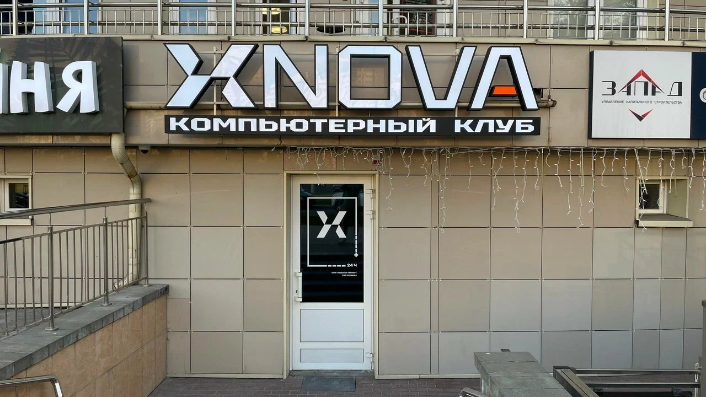
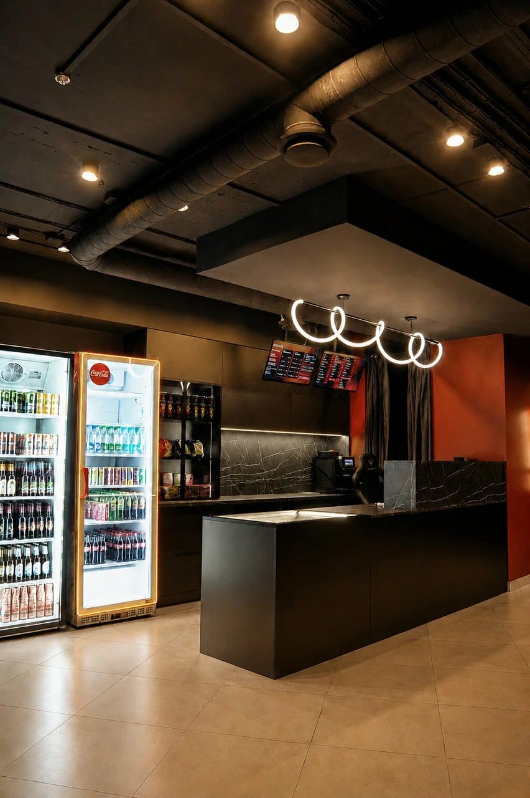
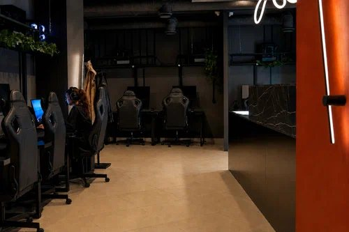

Для новичков


Первый визит
Идёшь к нам впервые? Вот как всё устроено, от входа до первой катки.
1
Найди вход
Мы на ул. Сергея Есенина, 6, на первом этаже. Ищи вывеску XNOVA с надписью «Компьютерный клуб» и дверь с большим значком X. Рядом метро Малиновка.

2
Загляни к стойке
У стойки можно уточнить свободные места и залы. Над ней висят экраны с тарифами, так что цены видно сразу.

3
Выбери тариф
Час, пакет «3+1» или «5+2», утро, ночь или сутки. На странице «Тарифы» есть переключатель будней и выходных, а в клубе цены на экранах.
4
Садись и играй
В клубе три зала: Comfort, Cyber и PS5 Room. Выбирай место, надевай наушники и погнали. Игры по подписке и аренду аккаунта уточняй у администратора.

5
Не забудь про перекус
В клубе есть напитки и снеки. Оплатить можно наличными, картой или онлайн.